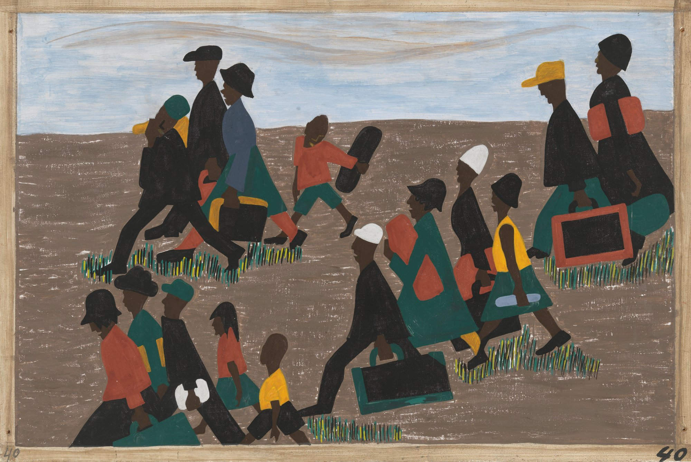

Wangechi Mutu (born 22 June 1972 in Nairobi, Kenya) is an artist and sculptor who lives and works in Brooklyn, New York. Mutu is considered by many to be one of the most important contemporary African artists of recent years, and her work has achieved much global acclaim.
the others in art
Wangechi-mutu
Foxy Lady

Kara-walker
Silhouettes

Kara Elizabeth Walker (born November 26, 1969) is an African American contemporary painter, silhouettist, print-maker, installation artist, and film-maker who explores race, gender, sexuality, violence, and identity in her work. She is best known for her room-size tableaux of black cut-paper silhouettes. Walker lives in New York City and has taught extensively at Columbia University.
Carrie-weems
Kitchen Table

Carrie Mae Weems (born April 20, 1953) is an American artist who is best known for her work in the field of photography. Her award-winning photographs, films, and videos have been displayed in over 50 exhibitions in the United States and abroad and focus on serious issues that face African Americans today, such as racism, sexism, politics, and personal identity.
Jacob-lawrence
Migration Series

Jacob Lawrence (September 7, 1917 – June 9, 2000) was an African-American painter known for his portrayal of African-American life. But not only was he a painter, storyteller, and interpreter; he also was an educator. Lawrence referred to his style as "dynamic cubism," though by his own account the primary influence was not so much French art as the shapes and colors of Harlem.